2021年北京市中考物理试题 · 选择题 第1、2、3、4、5题
1. 作为国际通用测量语言的国际单位制，极大地方便了国际交流。在国际单位制中，质量的单位是（ ）
A. 千克B. 牛顿C. 焦耳D. 瓦特
2. 下列四种用电器中。利用电流热效应工作的是（ ）
A. 电冰箱B. 电视机C. 电脑D. 电热水壶
3. 图示的四种用品中，通常情况下属于导体的是（ ）
A.
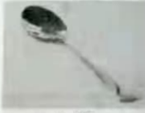
金属勺B. 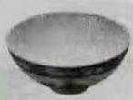
瓷碗C.
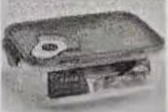
塑料壳D. 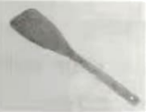
木铲4. 图示 四个实例中，为了减小摩擦的是（ ）
四个实例中，为了减小摩擦的是（ ）
A.
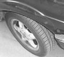
汽车轮胎上刻有花纹B. 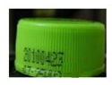
瓶盖上刻有竖条纹C.
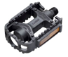
脚蹬面做得凹凸不平D. 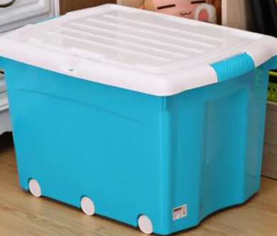
储物箱下装有滚轮5. 图示的四个实例中，为了增大压强的是（ ）
A.
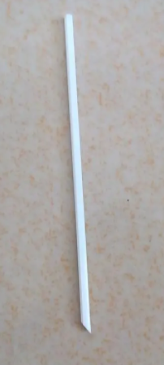
饮料管一端剪成斜口B. 在铁轨下面铺枕木
C.
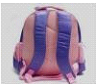
书包背带做得较宽D.
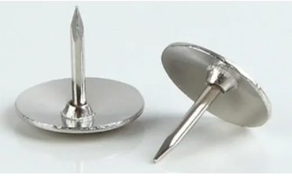
图钉帽的面积做得较大